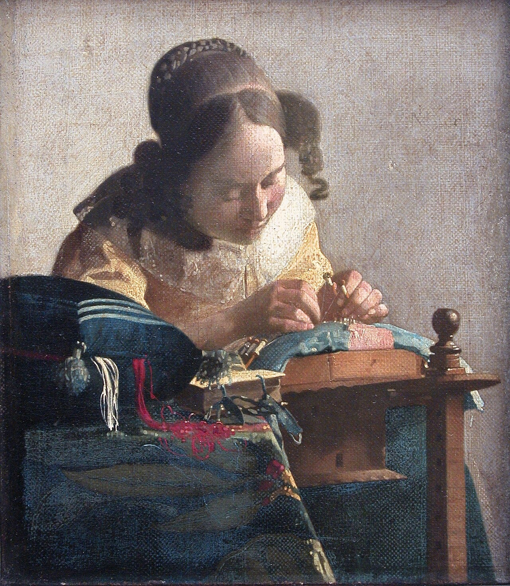

花边女工 The Lacemaker
维米尔 · 约1669–1671年 · 巴黎卢浮宫
Johannes Vermeer · c. 1669–71 · Musée du Louvre, Paris
图片：Wikimedia Commons，公有领域 / Image: Wikimedia Commons, public domain

发现 · Discover
最小的一幅 The smallest
这是维米尔最小的画之一，你得走得很近，才看得清细节。
This is one of Vermeer's smallest paintings. You have to come very close to see the details.
拉紧的线 The taut thread
画面的焦点，是她手指间拉紧的那根细白线，画得非常清楚。
The focus of the picture is the fine white thread stretched between her fingers, painted with great precision.
模糊的前景 A blurred foreground
离焦点越远，形状越模糊。奇怪的是，连离我们最近的东西也是模糊的。
The further from the focus, the more blurred the forms. Strangely, even the things closest to us are out of focus.
流动的彩线 Flowing threads
缝纫垫里垂下的红线和白线，画得像流动的颜料，几乎是抽象的。
The red and white threads spilling from the sewing cushion are painted like flowing paint, almost abstract.
祈祷书 The prayer book
桌上有一本小小的祈祷书。当时的荷兰绘画，常把勤劳当作一种家庭美德。
On the table is a small prayer book. Dutch painting of the time often presented industriousness as a domestic virtue.
她的专注 Absorbed
她低着头，全部注意力都在手上的活计里，完全没有注意到我们。
Head bowed, she is completely absorbed in her work and pays us no attention at all.
故事 · The story
一个安静的手艺 A quiet craft
17世纪60–70年代，花边女工是代尔夫特很受欢迎的绘画题材。维米尔画下了一位在家里做花边的年轻女子。
In the 1660s and 1670s, lacemakers were a popular subject in Delft. Vermeer painted a young woman making lace at home.
约1669–1671年 · 巴黎卢浮宫 / c. 1669–71 · Musée du Louvre, Paris
清楚与模糊 Sharp and soft
他让手指间的线清清楚楚，让离我们最近的彩线模糊得像流动的颜料。有人认为，他也许借助了暗箱这种光学装置。
He made the thread between her fingers crisp, and the threads nearest to us blur like flowing paint. Some believe he may have used a camera obscura, an optical device.
来到卢浮宫 To the Louvre
1870年，这幅小小的画进入了卢浮宫。
In 1870, this small painting entered the Louvre.
要走近一点，才看得清。 You have to come closer to see.
作品档案 · Artwork record
| 画家（生卒年） · Artist (dates) | 约翰内斯·维米尔（1632–1675） / Johannes Vermeer (1632–1675) |
|---|---|
| 画名 · Title | 花边女工 / The Lacemaker |
| 年份 · Date | 约1669–1671年 / c. 1669–71 |
| 材质 · Medium | 布面油画，裱于木板 / Oil on canvas mounted on panel |
| 尺寸 · Dimensions | 24.5 × 21 cm |
| 收藏地 · Collection | 巴黎卢浮宫（1870年入藏） / Musée du Louvre, Paris (entered the Louvre in 1870) |
关于画家 · About the artist
约翰内斯·维米尔（1632–1675），荷兰画家，一生都在代尔夫特生活和创作。他留下的画作只有约35幅，以描绘室内的光线著称。
Johannes Vermeer (1632–1675) was a Dutch painter who lived and worked in Delft all his life. Only about 35 of his paintings survive, famous for their rendering of light in quiet interiors.
更多维米尔的画 · More by Johannes Vermeer